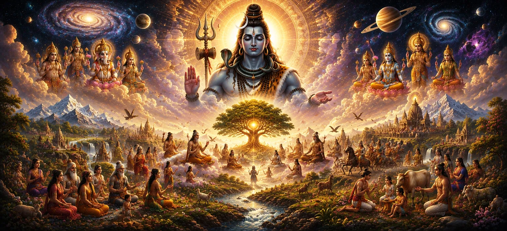

With the creation of the gods, the great sages, and the celestial beings complete, the universe now possessed its divine guardians, teachers, and protectors. Yet the sages assembled at Naimisharanya wished to understand a far deeper mystery. They respectfully asked why the Supreme Lord chose to manifest such a vast universe in the first place. Was creation merely a display of divine power, or did it exist for a higher spiritual purpose? Hearing these profound questions, the narrator explained that nothing created by Lord Shiva is without meaning. Every world, every living being, every law of nature, and every cycle of time exists according to His infinite wisdom. Creation itself is a sacred expression of divine compassion, offering every soul the opportunity to evolve through knowledge, righteous action, devotion, and ultimately attain liberation.
The Shiva Purana reveals that creation is not separate from the Supreme Lord but a manifestation of His eternal will. Through creation, souls receive the freedom to perform actions, experience their consequences, learn the value of Dharma, and gradually awaken to their own divine nature. The material universe therefore becomes a sacred school where every experience ultimately leads sincere seekers toward the realization of the Eternal Truth. This chapter explains that the purpose of life is not merely worldly enjoyment or material success. The highest purpose of creation is to help every soul rediscover its forgotten relationship with Lord Shiva. By following the path of righteousness, compassion, wisdom, and unwavering devotion, every being can transcend worldly bondage and return to the eternal grace of the Supreme Lord.
The Shiva Purana teaches that creation did not arise from necessity or limitation. The Supreme Lord is complete, self-sufficient, and eternally perfect. Therefore, He did not create the universe to gain anything for Himself. Rather, creation is an expression of His boundless compassion toward countless souls. By manifesting the worlds, Lord Shiva provided every soul with opportunities to learn, grow, perform righteous deeds, and gradually attain liberation. Every experience, whether joyful or painful, becomes a step toward spiritual awakening when lived with wisdom and devotion.
One of the greatest gifts bestowed upon living beings is free will. Lord Shiva allows every soul to choose between righteousness and ignorance, compassion and selfishness, devotion and attachment. Through these choices, each being creates its own destiny according to the eternal law of Karma. The Supreme Lord never forces devotion upon anyone. Instead, He patiently guides every soul through experience until it willingly turns toward the path of truth and spiritual realization.
Every experience teaches the soul an eternal lesson.
Righteous actions strengthen the soul's journey toward liberation.
The ultimate goal of life is union with the Supreme Lord.
According to the Shiva Purana, every living being has a sacred purpose regardless of birth, status, or ability. Human life is especially precious because it provides the opportunity to consciously seek the Supreme Lord. Wealth, knowledge, family, and worldly success have value only when they help the soul progress toward divine realization. The purpose of creation is fulfilled when a soul recognizes its eternal relationship with Lord Shiva. This realization transforms ordinary life into a path of devotion, service, wisdom, and everlasting peace.
To fulfill the divine purpose of creation, Lord Shiva established the eternal law of Karma. Every thought, word, and action produces its own result, ensuring that perfect justice prevails throughout the universe. No deed is ever forgotten, and every soul experiences the consequences of its actions at the appropriate time. This divine law is not meant to punish living beings but to educate them. Through Karma, souls gradually learn the difference between righteousness and ignorance, allowing them to grow spiritually with every lifetime until they become worthy of liberation.
The Shiva Purana explains that along with creation, the Supreme Lord also manifested Maya—the divine power that conceals ultimate reality. Through Maya, living beings become attached to the temporary world and forget their eternal relationship with Lord Shiva. Yet Maya is not an enemy. It serves as a spiritual test through which every soul learns wisdom, detachment, and devotion. When a seeker sincerely remembers the Supreme Lord, the veil of Maya gradually lifts, revealing the eternal truth hidden within creation.
Although creation appears vast and complex, its ultimate purpose is beautifully simple—to lead every soul back to the Supreme Lord. Birth, experience, knowledge, devotion, and spiritual practice are all steps along this sacred journey. Every challenge in life carries the potential to awaken a deeper understanding of the Eternal. The Shiva Purana teaches that liberation (Moksha) is not achieved by abandoning the world alone, but by living within it while remembering Lord Shiva in every action. When the heart becomes free from ego and attachment, the soul naturally returns to its divine source.
Remember Lord Shiva with love and unwavering faith.
Perform every action honestly, compassionately, and without selfishness.
Discover your eternal connection with Mahadeva and attain lasting peace.
The Shiva Purana reveals that creation reaches its true fulfillment not when countless worlds are formed, but when even a single soul awakens to its divine nature. Mountains, rivers, stars, kingdoms, and civilizations all exist within the flow of time, yet their highest purpose is to inspire living beings to seek the Eternal. Every act of compassion, every sincere prayer, every righteous deed, and every moment of selfless devotion brings creation closer to its sacred purpose. Thus, the universe is not merely a place to live—it is a divine path leading every soul toward everlasting union with the Supreme.
The soul enters creation to begin its journey.
Life teaches Dharma through experience and Karma.
Love for Lord Shiva purifies the heart.
The soul returns to its eternal divine source.
"Creation finds its highest purpose when the soul discovers that its eternal home has always been with Lord Shiva."
Having understood why the universe was created and the spiritual purpose hidden within every living being, the sages desired to know more about the Supreme Lord Himself. If all creation exists by His will, who is the eternal source from whom every creative power arises? Their inquiry leads naturally into the next sacred revelation, where the infinite glory of Lord Shiva as the Eternal Creator is unfolded in greater depth, revealing why He alone remains beyond time, beyond creation, and beyond all change.
The sacred purpose behind the creation of the universe has now been revealed. Continue to the next chapter to discover the infinite glory of Lord Shiva as the Eternal Creator, the Supreme Source from whom all creation, preservation, and dissolution eternally arise.